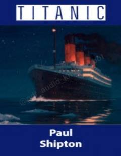

TMashhur Titanik filmi va haqiqiy kema fojiasi haqidagi qiziqarli ma'lumotlar to'plami.
Ushbu kitob Jeyms Kemeronning mashhur 'Titanik' filmi yaratilishi tarixi va haqiqiy Titanik kemasining fojiali taqdiri haqida hikoya qiladi. Unda kemaning qurilishi, yo'lovchilarning hayoti va kema bilan bog'liq g'ayritabiiy bashoratlar batafsil yoritilgan.